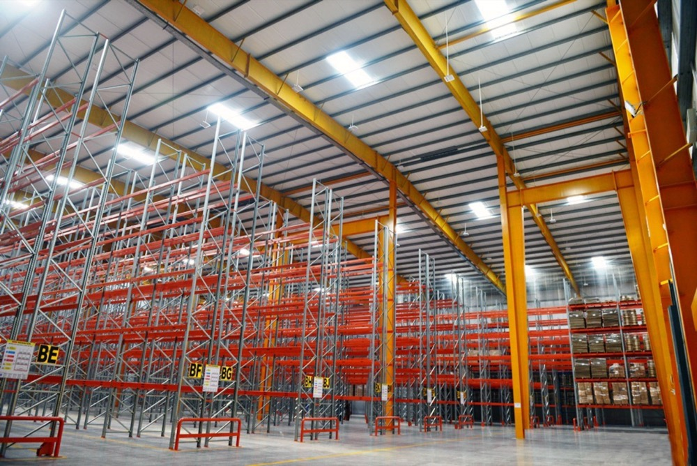
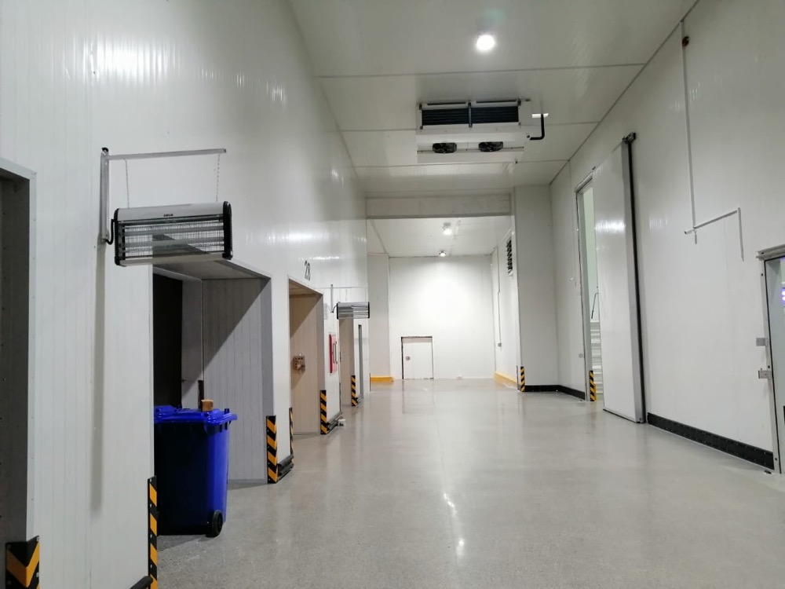
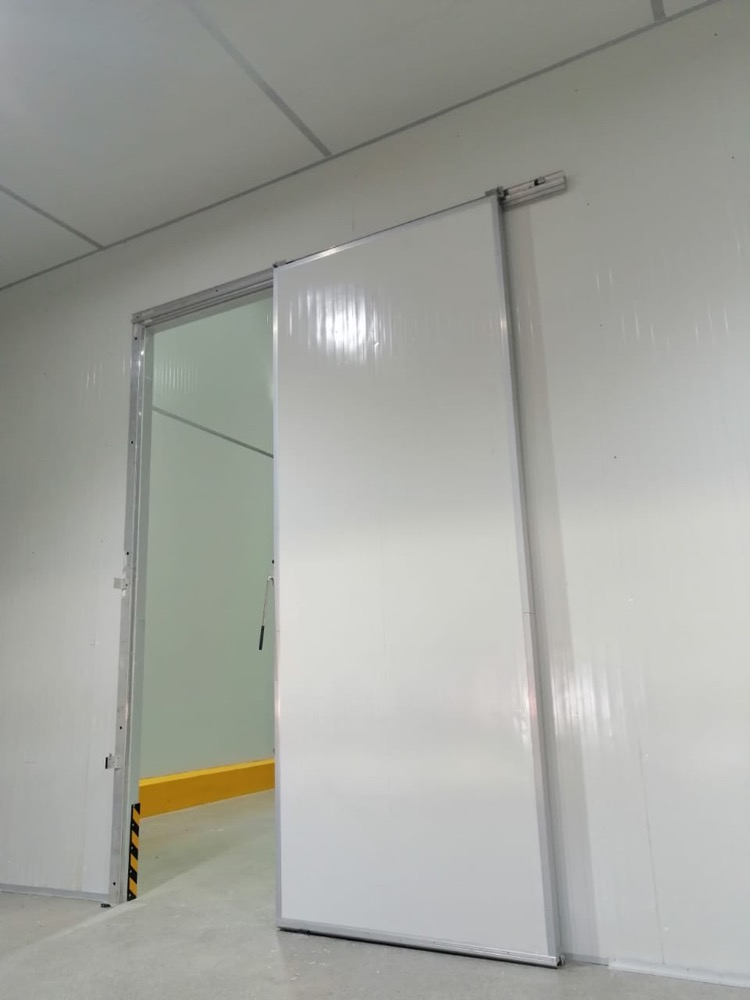
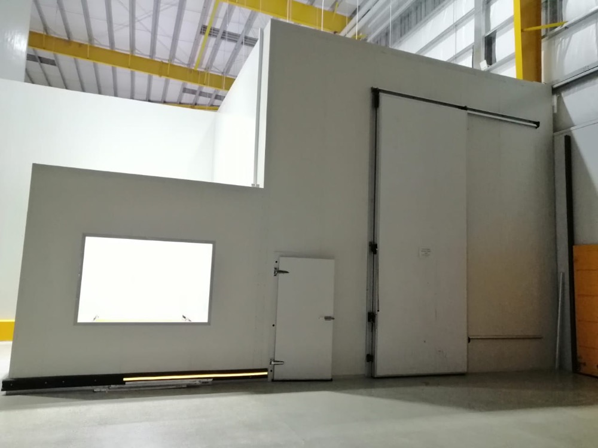
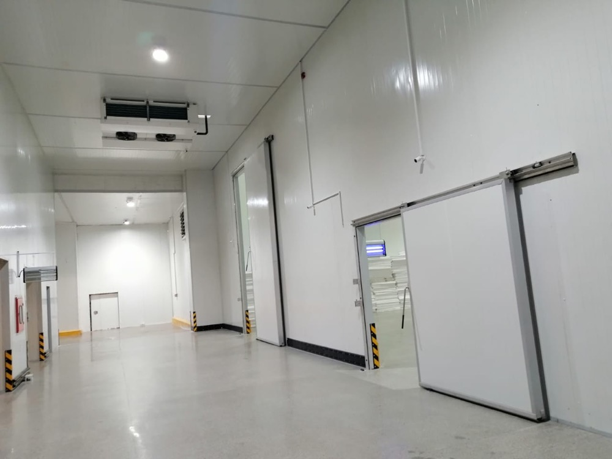

Connect Logistics, Karachi — multi-temperature cold storage warehouse with multiple loading docks for cold-chain 3PL operations
Izhar Foster designed and installed the cold storage warehouse for Connect Logistics in Karachi — a multi-temperature 3PL cold-chain facility with multiple loading docks, FireSafe PIR insulated envelope, ammonia-glycol refrigeration plant, and zone capability spanning frozen warehouse (−25°C), chilled cold storage (+2 to +4°C), and ambient-controlled distribution (+15 to +25°C). Built for the demanding throughput of Pakistan's largest port-city cold-chain logistics market, with ASHRAE-grade engineering for Karachi's coastal humidity and 42°C summer ambient.

Karachi is Pakistan's port city, its largest commercial market, and the natural hub for the country's third-party cold-chain logistics industry. Cold storage warehouses in Karachi serve frozen and chilled imports through Karachi Port and Port Qasim, distribute domestic produce from Sindh and Punjab to retail and HORECA, and stage temperature-sensitive exports for shipment outbound. The cold-chain 3PL infrastructure in Karachi has grown faster than anywhere else in Pakistan over the last decade — and Izhar Foster has built a meaningful share of it.
The Connect Logistics installation is one of the more demanding projects in our Karachi portfolio. It is a multi-temperature cold storage warehouse with multiple loading docks, sized to serve a third-party logistics business handling diverse client portfolios across frozen, chilled, and ambient-controlled product classes — all under one PIR-clad roof, with refrigeration zoning that can be reconfigured as the business mix changes.
What multi-temperature 3PL cold storage actually requires
Single-zone cold storage is the easier engineering. Multi-zone is harder by an order of magnitude. The reasons are interconnected:
- Refrigeration sizing per zone — each room has its own setpoint, its own infiltration load, its own product pull-down profile, and its own latent load contribution. Sizing one plant to serve them all (or a small number of plants serving zones in groups) requires careful matching of compressor capacity to the largest single-zone peak, plus headroom for simultaneity.
- Inter-zone airflow management — when the frozen zone door opens to the chilled zone, you have a major thermal event. Airlocks, air curtains, and dock-level vestibules are not optional; they are the difference between a warehouse that holds setpoint and one that loses 30% of its refrigeration capacity to dock cycling.
- Dock dynamics — a 3PL warehouse cycles trucks all day and sometimes all night. Dock door open-time, dock seal quality, and the speed of the high-speed insulated door at each bay all directly affect operating cost. Hörmann high-speed roll-up doors at the dock face are the global standard for this reason.
- Floor performance under low-temperature operation — a frozen warehouse running below 0°C for years risks frost-heave from soil moisture below the slab. Connect Logistics specifications include the floor heating coils and slab construction that prevent this; in shorter-term ambient or chilled rooms, sealed industrial concrete is standard.
- Hygiene zoning between client portfolios — a 3PL warehouse may simultaneously hold dairy, frozen meat, ready meals, and pharmaceuticals for different clients. Each has different regulatory contexts (Punjab Food Authority, Sindh Food Authority, DRAP, AIB International if a brand mandates it). Cross-contamination prevention is built into the panel finish, the wall-floor cove sealing, and the room-to-room access design.
The Karachi-specific engineering case
Karachi cold storage design is not Lahore cold storage design. The differences matter:
Coastal humidity. Karachi's relative humidity averages 60–80% through most of the year, with peaks past 90% during monsoon. Latent loads inside the cold rooms — dehumidification of incoming air, evaporator coil ice formation, dock air contamination — are substantially higher than at Pakistan's inland cities. Refrigeration plant sizing accounts for this with a higher latent-fraction factor in the heat-load calculation, and evaporator selection biased toward higher airflow per kW of cooling.
Ambient temperature. Karachi's ASHRAE 0.4% design DB is around 38°C, with operating peaks closer to 42°C. Less extreme than Multan's 47°C, but still requiring proper condenser derate at the upper end. Izhar Foster uses MT 2.0%/K and LT 2.7%/K condenser derate factors for every Pakistani site — Karachi included.
Salt air corrosion. Sea-front Karachi locations face salt deposition on outdoor refrigeration equipment. We specify enhanced coil coatings (epoxy-treated condensers, marine-grade fasteners) for cold-storage facilities within 5 km of the coast.
Power redundancy. Karachi's grid is more reliable than Pakistan's interior, but K-Electric service can still see outages. Connect Logistics operates with full generator backup, soft-start on the larger compressors, sequenced restart logic, and UPS-backed controls. Standard scope on every Izhar Foster Karachi installation.
The architecture of a 3PL cold-chain warehouse
The Connect Logistics building, visible in the aerial drone photography, is a steel-frame structure clad in royal blue PIR sandwich panels. Inside that envelope, the floor plan is segmented into zones:
| Zone | Setpoint | Typical product | Panel |
|---|---|---|---|
| Frozen storage | −18 to −25 °C | Frozen meat, frozen ready meals, ice cream, frozen vegetables | 150 mm PIR (U=0.13 W/m²K) |
| Blast freezer | −35 to −40 °C | Rapid freezing for processed product | 150–200 mm PIR |
| Chilled / cold room | +2 to +4 °C | Chilled dairy, deli, fresh meat, fresh produce | 100 mm PIR (U=0.19 W/m²K) |
| Cool storage | +8 to +12 °C | Beverages, banana ripening, some fresh produce | 80 mm PIR (U=0.25 W/m²K) |
| Ambient-controlled | +15 to +25 °C | Pharmaceuticals (CRT), packaged foods, dry goods | 50–80 mm PIR |
Loading docks line the building's working face — the photograph shows multiple docks under a continuous canopy, with red painted dock equipment and brand-coloured insulated doors. Each dock is sized for a 40-ft reefer or articulated trailer, with dock leveller, dock seal, and a high-speed insulated door (Hörmann-class) that opens only as the truck backs in. Cross-docking — direct truck-to-truck transfer for fast-moving SKUs — uses the central spine of the warehouse.
Refrigeration plant — what powers the building
A multi-temperature 3PL cold storage of this scale uses a primary refrigeration plant feeding multiple zones. Two architectures are common:
Ammonia-glycol indirect. Ammonia is the working fluid in the machine room, exchanging heat with a glycol secondary loop that distributes to evaporators in each zone. Ammonia stays confined to the machine room, eliminating any product-side ammonia exposure risk. Capital cost is higher, but safety and inspection regime are simpler. Often the right choice for multi-tenant 3PL facilities where the operator cannot guarantee what products may be stored.
Ammonia DX with secondary CDU rooms. Ammonia DX (direct expansion) for the largest single-temperature rooms (typically the frozen warehouse), with separate condensing-unit (CDU) rooms running HFC refrigerants for the smaller chilled and ambient zones. Lower capital cost, more complex maintenance regime, more refrigerant mass total but spread across multiple smaller charges.
Both architectures use Bitzer compressors as the global gold standard, Heatcraft condensing units and rack systems for the secondary zones, and LU-VE ceiling-mounted evaporators throughout the warehouse. Refrigerant choices — R-404A on legacy plants, R-449A and R-454C on new builds (lower-GWP, F-gas phase-down compliant), R-507 in some niche applications — are project-specific.
Photographs from the commissioned facility






Why 3PL operators specify Izhar Foster
Cold-chain logistics operators are some of the most engineering-driven buyers in Pakistan. They live with their cold-storage envelope every day for 25 years and they pay the electricity bill. They are not romantic about the supplier choice. Izhar Foster wins this category for five hard-edged reasons:
- In-house FireSafe PIR manufacturing. Other firms in Pakistan resell imported panels or fabricate from imported coils. We make our own panels — at the 277,460 sqft Lahore plant, the largest of its kind in Pakistan, with our own pentane-blown PIR foam line. That means project lead times are not at the mercy of a panel-import schedule, and quality consistency across thousands of square metres is under our direct control.
- Engineering depth. 100+ engineers. ASHRAE Refrigeration Handbook Ch. 24 calculation methodology cross-validated against Heatcraft NROES, Copeland AE-103, Danfoss Coolselector, Bitzer Software. ISO 9001:2015 quality management. Every project is sized against the actual Pakistani city ASHRAE point, not a generic industrial baseline.
- Named global component partners. Bitzer compressors. Heatcraft rack systems. LU-VE evaporators. Hörmann doors. Zanotti packages. Fruit Control for CA. None exclusive — but our integration depth with each is the engineering moat.
- Pakistan-resident service. Every component we install has parts and service support in Pakistan. No "ship it back to Italy" for repairs; no 6-month wait for a replacement compressor. This is what an operator looking at year-15 of plant life cares about.
- 2,100+ delivered installations and a named-client portfolio. Coca-Cola, Pepsi, Nestlé, Engro, K&N's, Hyperstar, Pakistan Army, USAID. Other 3PL operators (Sharaf Logistics, Emirates Logistics) have built with us before. Connect Logistics joins that list as one of Pakistan's most prominent cold-chain 3PL installations.
How to scope a cold-chain logistics warehouse
The engineering scope of a multi-temperature 3PL cold storage starts with five questions: total floor area, zone breakdown (frozen / chilled / ambient ratio), throughput (pallets in/out per day), truck profile (40-ft reefer / 20-ft / smaller), and geographic catchment. From those five, an experienced cold-chain engineer can generate a refrigeration kW number, a panel-area and thickness estimate, a door count, and a dock count — all converging on a project budget within a 20% band.
For an indicative refrigeration sizing on your specific scope, run our cold room heat load calculator with the largest single zone you plan to operate. For a complete engineering scope and quote, contact our team with the five inputs above. Engineers respond within 24 hours.
Other cold-chain projects in Pakistan.
How Connect sits within Izhar Foster's portfolio of named cold-chain installations across Pakistan.
Coca-Cola TCCEC
High-bay drive-in pallet racking and ammonia-based finished-goods cold storage for Coca-Cola in Lahore.
02Pepsi · GujranwalaNaubahar Bottling Co.
PIR-clad bottling-plant cold storage and on-site quality-control laboratory environment for the Pepsi franchise in Gujranwala.
03Lab · LahoreHaier Climate Test Lab
Climate-controlled environmental testing chambers built inside Haier's Lahore facility — a cold-storage discipline applied to electronics QC.
04Agriculture · SindhUSAID Banana Ripening
Donor-funded banana ripening and cold storage rooms for farmer cooperatives in Sindh — supporting Pakistan's banana sector.